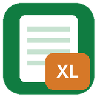

Piccoli programmi per sbrigare
il lavoro d'ufficio
Trasforma fatture elettroniche ed estratti conto in fogli Excel ordinati, in pochi secondi. I programmi funzionano sul tuo computer: i documenti non vengono caricati da nessuna parte.

Fatture in Excel
Le fatture elettroniche XML e P7M, anche lo zip scaricato dal Cassetto fiscale, in un unico file Excel con una riga per fattura, dettaglio IVA e riepiloghi per fornitore e per mese.
Estratti conto in Excel
Gli estratti conto in PDF in una tabella Excel con una riga per movimento: date e importi veri, più mesi insieme, saldi evidenziati. Funziona anche con altre tabelle PDF.
Perché sono diversi
- ✓ Funzionano offline, sul tuo PC
- ✓ Niente abbonamento: paghi una volta
- ✓ Prova gratuita, senza registrazione al programma
- ✓ Niente installazione: doppio clic e partono
Guide gratuite
- Come aprire un file P7MCos'è la fattura firmata digitalmente e come leggerla
- Fatture elettroniche XML in Excel: 3 metodiDal gestionale, con Power Query o con un programma dedicato
- Estratto conto PDF in Excel: 4 metodiDall'home banking, con Excel o con un convertitore
- Come è fatta una fattura elettronicaLe parti di un file FatturaPA spiegate in modo semplice